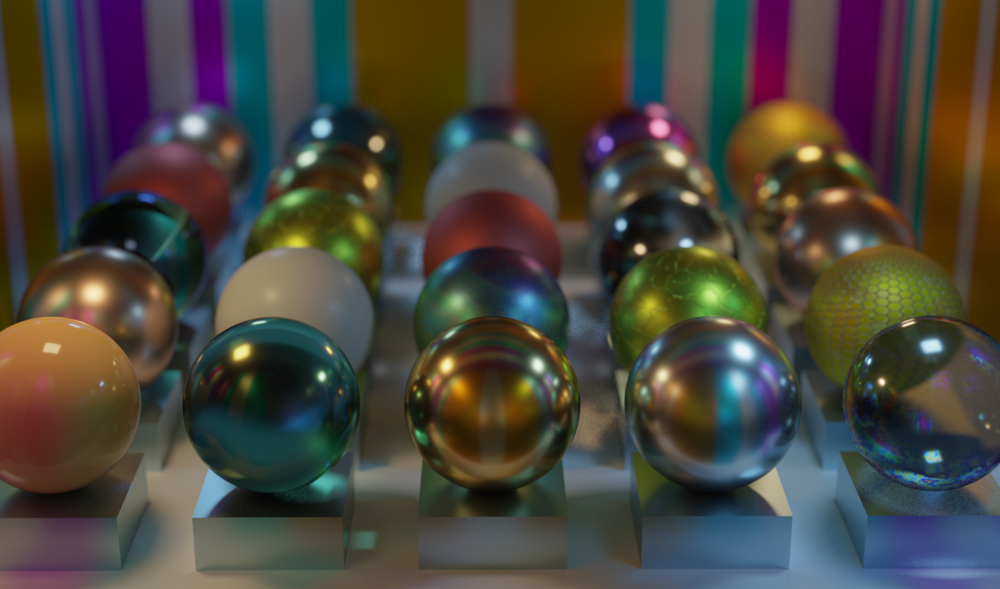

About Me
I'm a second year graduate student pursuing a MSE in Computer Graphics and Game Technology (Computer Science) at the University of Pennsylvania. Previously,
I graduated with a double major in Computer Science and Electrical Engineering from the University of Virginia in 2021.
While I have a background in many fields of computer graphics, I'm most interested in physically-based rendering, path-tracing, and game engines.
When I'm not working on an exciting graphics project, I enjoy playing video games, especially retro games, tennis, and hanging out with my cats.
Check out the rest of my site for info on some cool technical and artistic projects I've worked on, including these:

GLSL Path Tracer